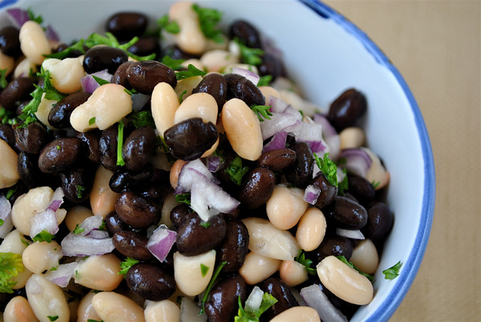

Zulfika's Bean Salad

Description
This recipe is very close to my heart, because it's something my mom used to make all the time during summer, and honestly throughout the year when we needed
a quick and easy snack or lunch. Whenever my high school friends would be hanging out at the house, this bean salad was a fan favourite. Even now, years removed from eating this salad,
my friends still remind me of how much they love it! This bean salad is fresh, zesty, a little spicy, and is super easy to make. It's also a great source of fibre, and a perfect side salad for a summer barbecue!
Ingredients
- 2 cans chickpeas, drained and rinsed
- 1 can red kidney beans, drained and rinsed
- 1 medium red onion, diced
- 2-3 Thai green chilies, finely sliced (optional)
- 1/2 pint of cherry tomatoes, cut into halves
- 1/4 bunch of cilantro, chopped
- Juice of 1 lemon
- 2 tbsp olive oil
- 1/2 tsp Sri Lankan chili powder or cayenne pepper
- 1/2 tsp freshly ground black pepper
Steps
- In a large bowl, add 2 cans of chickpeas, 1 can red kidney beans, diced red onion, sliced green chilies, halved cherry tomatoes, and the chopped cilantro.
- In the same large bowl, add the juice of a lemon, olive oil, chili powder (or cayenne pepper), ground black pepper, and salt.
- Toss the ingredients thoroughly and adjust seasoning as needed.
- Enjoy as a side salad with some protein or enjoy as its own meal!
Want to browse more recipes? Odin Recipes